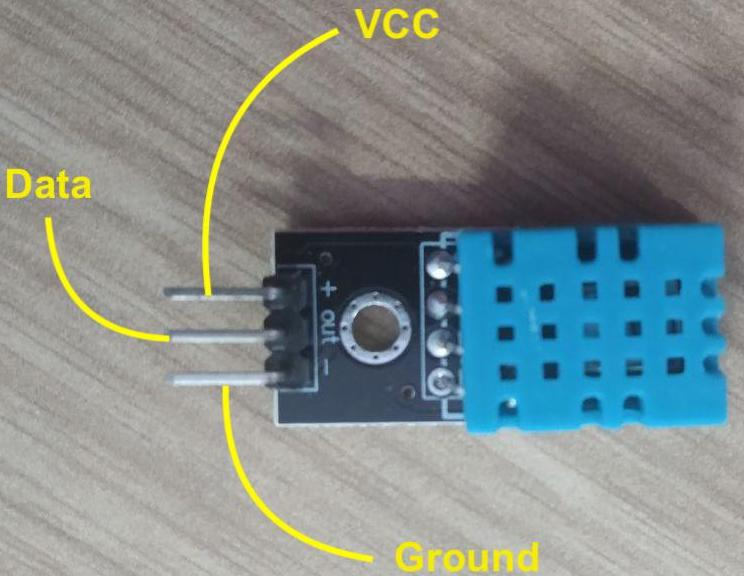
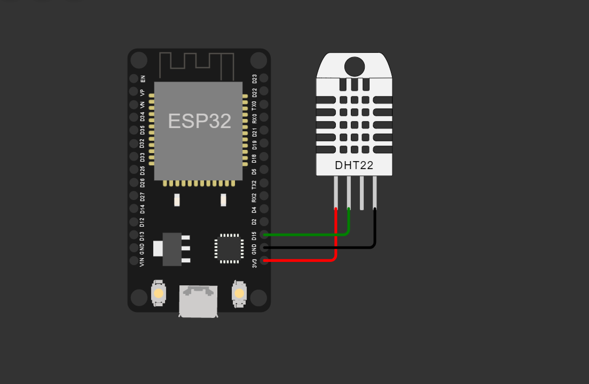
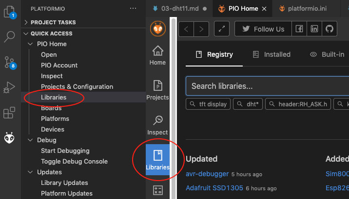
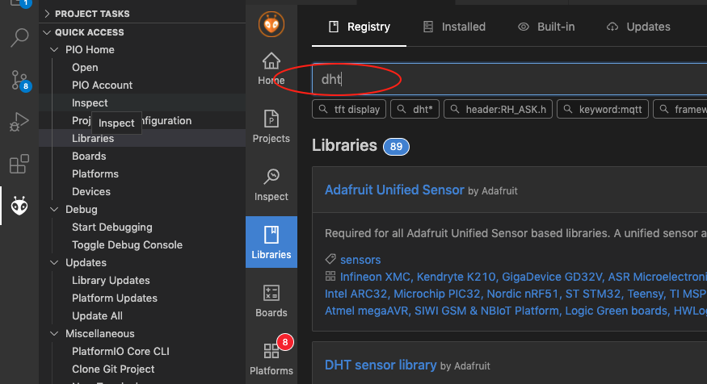
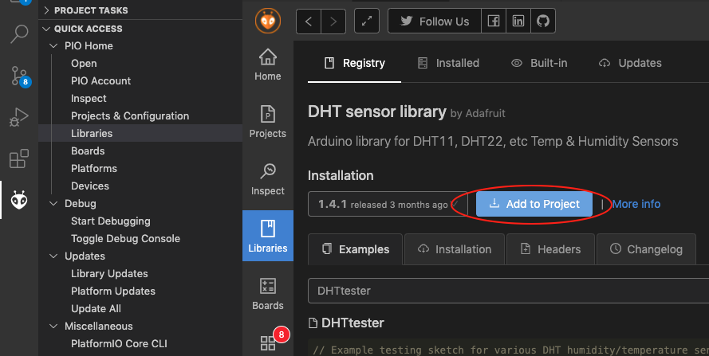
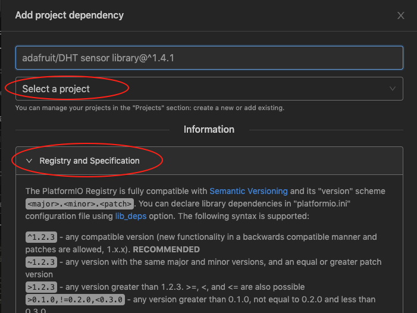

DHT11
Topik Bahasan
Implementasi program sensor Suhu & Kelembaban DHT11
Kemampuan Akhir yang Direncanakan
- Menjelaskan cara kerja sensor DHT11
- Menjelaskan cara kerja analogRead
- Menampilkan suhu dan kelembaban dalam satuan derajat dan fahrenheit pada console debugger secara real time
Teori Singkat
Sensor Suhu dan Kelembaban
Salah satu sensor diantara sensor-sensor yang lain adalah sensor suhu dan kelembaban. Sensor ini digunakan untuk mengambil data suhu pada lingkungan tertentu beserta tingkat kelembabannya. Salah satu sensor tersebut yang banyak digunakan adalah DHT11 karena secara biaya sangat minim serta mudah digunakan.
Jenis sensor lain yang memiliki fungsi yang sama adalah DHT22, yang membedakan dari tipe ini adalah keakuratan dalam mengambil data suhu dan kelembaban dan juga lama atau jeda dalam pengambilan sampling. DHT22 mengambil sampling setiap 2 detik, sedangkan DHT11 setiap 1 detik. Tentunya DHT22 lebih baik dibandingkan dengan versi terdahulunya, DHT11.
Spesifikasi sensor DHT11
| Nama | Nilai |
|---|---|
| Tegangan | 3,5 V - 5,5 V |
| Arus | 0,3 mA |
| Jangkauan Suhu | 0 - 50 derajat Celsius |
| Jangkauan Kelembaban | 20%-90% |
| Akurasi Pengukuran | +- 2 derajat Celsius (Suhu) |
| 5% (Kelembaban) |
Spesifikasi sensor DHT22
| Nama | Nilai |
|---|---|
| Tegangan | 3,5 V - 5,5 V |
| Arus | 0,3 mA |
| Jangkauan Suhu | -40 - 80 derajat Celsius |
| Jangkauan Kelembaban | 0% - 100% |
| Akurasi Pengukuran | +- 0.5 derajat Celsius (Suhu) |
| 2 - 5% (Kelembaban) |
Sumber: https://learn.adafruit.com/dht
Struktur pin pada sensor DHT11 seperti berikut, sebenarnya sama dengan DHT22. Perbedaannya adalah jika DHT22 biasanya penutup menggunakan warna putih. 
Dari gambar di atas terlihat bahwa terdapat 3 kaki yang masing-masing memiliki fungsi dan peran masing-masing adalah sebagai berikut;
VCCdigunakan untuk memberikan tegangan pada sensor, pada NODEMCU dihubungkan pada pin Vin atau 3v3.Datadigunakan untuk menghubungkan hasil pembacaan data dari nilai suhu atau kelembaban pada sensor, dihubungkan pin tertentu yang tersedia.Grounddihubungkan pada pin GND pada NODEMCU.
Praktikum Project Wokwi
Kemudian Anda bisa mendesign rangkaian menggunakan Wokwi, namun untuk board ESP8266 belum tersedia sehingga anda perlu menyesuaikan dengan menggunakan board ESP32 dan penyesuaian GPIO ketika program tersebut dijalankan. Sesuai dengan penjelasan di atas untuk keterangan GPIO ESP8266 bisa merujuk di sini, sedangkan ESP32 bisa merujuk di sini.
- Silakan masuk ke Wokwi - Buat projeact baru - Pilih boardnya ESP32
Buatlah sebuah rangkain seperti pada gambar berikut

Sehingga untuk rangkaian menjadi seperti berikut
| ESP32 | DHT22 | | ------- | ------ | | D15 | Data | | 3V3 | VCC | | GND | Ground |
Sedangkan untuk kode program masukan ke code editor di wokwi sehingga menjadi seperti berikut
```cpp const int DHT_PIN = 15; //mendefinisikan pin digital yang digunakan DHT22 DHTesp dhtSensor; //objek dhtSensor untuk membaca suhu dan kelembaban dari sensor
void setup() { Serial.begin(115200); dhtSensor.setup(DHT_PIN, DHTesp::DHT22); //inisialisasi sensor DHT22 }
void loop() { TempAndHumidity data = dhtSensor.getTempAndHumidity(); Serial.println("Temp: " + String(data.temperature, 2) + "°C"); Serial.println("Kelembapan: " + String(data.humidity, 1) + "%"); Serial.println("---"); delay(1000); }
Ketika dijalankan seharusnya seperti berikut ini
Temp: 42.60°C
Humidity: 24.0%
---
Temp: -13.50°C
Humidity: 24.0%
---
Temp: -13.50°C
Humidity: 24.0%
---
Temp: 39.20°C
Humidity: 24.0%
---
Temp: 39.20°C
Humidity: 24.0%
---
Temp: 39.20°C
Humidity: 51.0%
---
Temp: 39.20°C
Humidity: 51.0%
---
Temp: 39.20°C
Humidity: 51.0%
Praktikum - Membaca data suhu dan kelembaban udara di NodeMCU
Pada praktikum pertama, anda akan melakukan percobaan untuk menangkap data suhu dan kelembaban udara dengan sensor DHT11.
Susunan rangkaian sederhana pada praktikum ini seperti gambar berikut.

Dari gambar di atas terlihat terdapat resistor, jika tidak memiliki resistor diabaikan saja dan dihubungkan langsung ke pin tanpa melalui resistor.
Skematik dari rangkaian di atas
| NODEMCU | DHT11 |
|---|---|
| D1 | Data |
| Vin | VCC |
| GND | Ground |
Berikut ini adalah contoh source code untuk membaca suhu dan kelembaban udara menggunakan Visual Studio Code.
- Buat project dengan nama
vs-program - Tentukan board yang digunakan, dengan mengetik
esp8266kemudian pilih yangEspressif ESP8266 EFSP-12E - Untuk lokasi penyimpanan project disesuaikan dengan kebutuhan Anda.
Tunggu beberapa saat sampai dibuat struktur project oleh Visual Studio Code. Kemudian tambahkankan beberapa konfigurasi pada file
platform.inilib_deps = adafruit/DHT sensor library@^1.4.1 adafruit/Adafruit Unified Sensor @ ^1.1.4 monitor_speed = 115200Dapat juga menggunakan pada tombol
librariesyang disediakan oleh PlatformIO kemudian akan muncul isian library yang bisa kita cari, terlihat seperti pada gambar di bawah ini
Silakan ketik
dhtsehingga akan muncul banyak varian yang bisa digunakan, silakan pilih yang banyak didownload dan sesuai kebutuhan. Untuk lebih jelasnya perhatikan gambar di bawah ini
Setelah memilih library yang akan kita gunakan, kita dapat memilih cara untuk menambahkan library ke project dengan klik tombol
Add to Projectdan pilih projek yang akan ditambahkan library tersebut seperti ditunjukkan pada gambar berikut
Langkah yang lain, kita dapat menambahkan konfigurasi pada file
platform.inidengan propertylib_deps. Banyak model yang bisa digunakan misalkan menambahkan link github pada file tersebut atau dengan menyebut nama library diikuti dengan versi library, misalkan seperti di bawah ini:adafruit/DHT sensor library @ ^1.4.1artinya ketika menggunakan sintaks tersebut berarti library tersebut masih bisa untuk menerima perbaikan fungsi update dari versi yang sebelumnyaadafruit/DHT sensor library @ ~1.4.1adalah hanya menerima perbaikan bug fixing dari versi yang sebelumnya.adafruit/DHT sensor library @ 1.4.1berarti library yang digunakan adalah versi 1.4.1
Dokumentasi tersebut di atas dapat dilihat pada gambar di bawah ini ketika

Tambahkan baris kode untuk inisialisasi dan menambahkan fungsi sensor seperti di bawah ini
#include <Arduino.h> #include <DHT.h> #define DHTTYPE DHT11 DHT dht(D7, DHTTYPE);Tambahkan kode baris pada fungsi setup() untuk melakukan konfigurasi agar baudrate di serial monitor menjadi 11500.
Serial.begin(115200); Serial.println("Menggunakan DHT11");Yang terakhir, tambahkan kode untuk menampilkan data hasil pembacaan sensor pada fungsi loop().
delay(2000); float h = dht.readHumidity(); float t = dht.readTemperature(); float f = dht.readTemperature(true); if (isnan(h) || isnan(t) || isnan(f)) { Serial.println("Failed to read from DHT sensor!"); return; } float hif = dht.computeHeatIndex(f, h); float hic = dht.computeHeatIndex(t, h, false); Serial.print(F("Humidity: ")); Serial.print(h); Serial.print(F("% Temperature: ")); Serial.print(t); Serial.print(F("°C ")); Serial.print(f); Serial.print(F("°F Heat index: ")); Serial.print(hic); Serial.print(F("°C ")); Serial.print(hif); Serial.println(F("°F"));Silakan jalankan program di atas dengan upload ke board Anda dan amati hasilnya.
Misalkan menggunakan library yang di atas masih belum berhasil, atau sensor suhu akurasinya kurang, ataubahkan tidak stabil silakan menggunakan library
winlinvip/SimpleDHT@^1.0.14.
Contoh code menggunakan library winlinvip/SimpleDHT@^1.0.14 dapat dilihat pada contoh di bawah ini
#include <Arduino.h>
#include <SimpleDHT.h>
#define pinDHT 7 // SD3 pin signal sensor DHT
byte temperature = 0;
byte humidity = 0;
SimpleDHT11 dht11(D7); //instan sensor dht11
void KelembabanSuhu()
{
int err = SimpleDHTErrSuccess;
if ((err = dht11.read(&temperature, &humidity, NULL)) != SimpleDHTErrSuccess)
{
Serial.print("Pembacaan DHT11 gagal, err=");
Serial.println(err);
delay(1000);
return;
}
Serial.print("Sample OK: ");
Serial.print((int)temperature);
Serial.print(" *C, ");
Serial.print((int)humidity);
Serial.println(" H");
delay(1500);
}
void setup()
{
Serial.begin(115200);
Serial.println("Simple DHT");
delay(1000);
}
void loop()
{
KelembabanSuhu();
}
Ketika dijalankan seharusnya seperti berikut ini
Sample OK: 31 *C, 95 H
Sample OK: 31 *C, 95 H
Sample OK: 31 *C, 95 H
Sample OK: 31 *C, 95 H
Sample OK: 31 *C, 95 H
Sample OK: 31 *C, 95 H
Sample OK: 31 *C, 95 H
Sample OK: 31 *C, 95 H
Sample OK: 31 *C, 95 H
Sample OK: 31 *C, 95 H
Sample OK: 31 *C, 95 H
Sample OK: 31 *C, 95 H
Kemudian Anda bisa mendesign rangkaian menggunakan Wokwi, namun untuk board ESP8266 belum tersedia sehingga anda perlu menyesuaikan dengan menggunakan board ESP32 dan penyesuaian GPIO ketika program tersebut dijalankan. Sesuai dengan penjelasan di atas untuk keterangan GPIO ESP8266 bisa merujuk di sini, sedangkan ESP32 bisa merujuk di sini.
- Silakan masuk ke Wokwi - Buat projeact baru - Pilih boardnya ESP32
Buatlah sebuah rangkain seperti pada gambar berikut
Sehingga untuk rangkaian menjadi seperti berikut
| ESP32 | DHT22 |
|---|---|
| D15 | Data |
| 3V3 | VCC |
| GND | Ground |
Sedangkan untuk kode program masukan ke code editor di wokwi sehingga menjadi seperti berikut
const int DHT_PIN = 15; //mendefinisikan pin digital yang digunakan DHT22 DHTesp dhtSensor; //objek dhtSensor untuk membaca suhu dan kelembaban dari sensor void setup() { Serial.begin(115200); dhtSensor.setup(DHT_PIN, DHTesp::DHT22); //inisialisasi sensor DHT22 } void loop() { TempAndHumidity data = dhtSensor.getTempAndHumidity(); Serial.println("Temp: " + String(data.temperature, 2) + "°C"); Serial.println("Kelembapan: " + String(data.humidity, 1) + "%"); Serial.println("---"); delay(1000); }Video Pendukung
Tugas
- Modifikasi baris kode pada bagian praktikum sehingga muncul data suhu dalam satuan Kelvin dan Reaumur!
Buatlah simulasi sebuah alat pembaca suhu dan kelembaban udara di tengah kota dengan memanfaatkan lampu LED sebagai indikator dengan disertai keterangan data suhu dan kelembaban yang ditampilkan pada serial monitor!
Contoh: Suhu pada sebuah kota dikategorikan dingin, normal, dan panas. Masing-masing kategori memiliki indikator lampu LED yang menyala, salah satunya ketika kategori dingin diwakili oleh LED hijau, normal diwakili oleh LED warna Biru, dan panas diwakili oleh LED warna Merah.
Misalkan tidak memiliki LED RGB, silakan menggunakan LED build in NODEMCU.
Gambarkan skematik dari simulasi yang Anda buat.
- Hasil dari simulasi tersebut silakan upload di youtube atau google drive dan urlnya disisipkan pada laporan Anda.